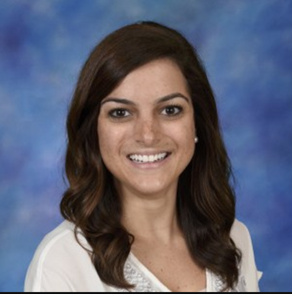

About Me
As a future graduate of Northwestern's Coding Bootcamp, Nicole is excited to explore the world of tech. Over the past four years, she has been a middle school teacher in the Chicago Public Schools as well as the Archdiocese of Chicago. Although she enjoys working with the Chicago youth, she has decided to explore the area of computer science for herself.
Over the summer, Nicole was an intern at Brave Initatives, a non-profit. Brave's mission is to collaborate with high school girls who are passionate about a current issue in their city and solve this issue by creating a website or web app. At Brave, Nicole was able to continue exercising her passion and experience in the classroom as she pursues a transition into the tech field for herself.